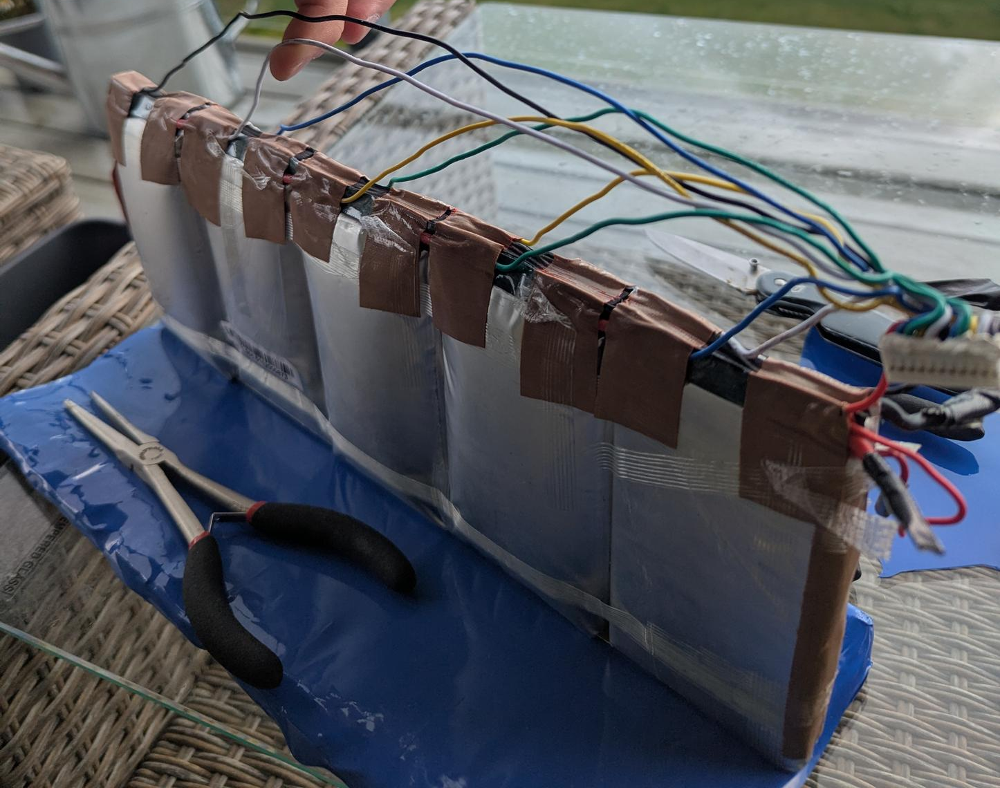
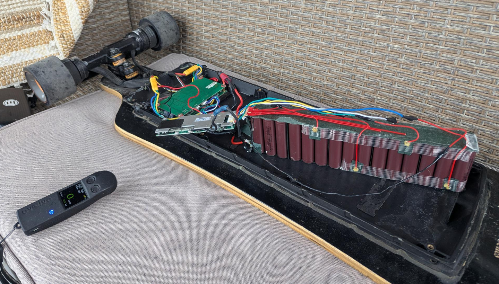
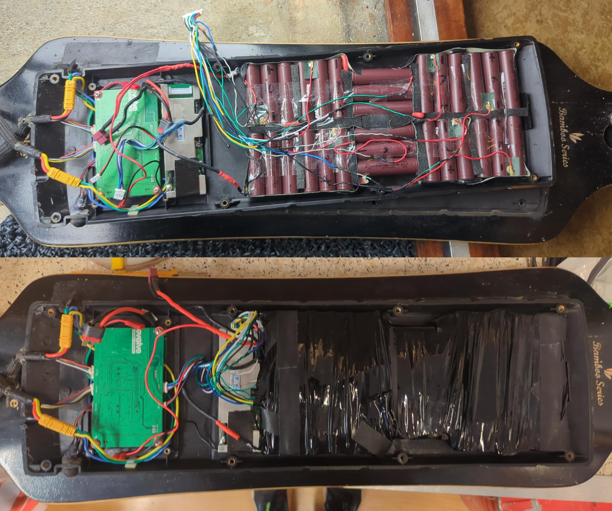
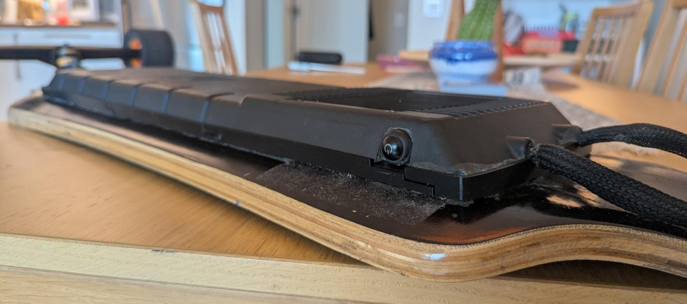
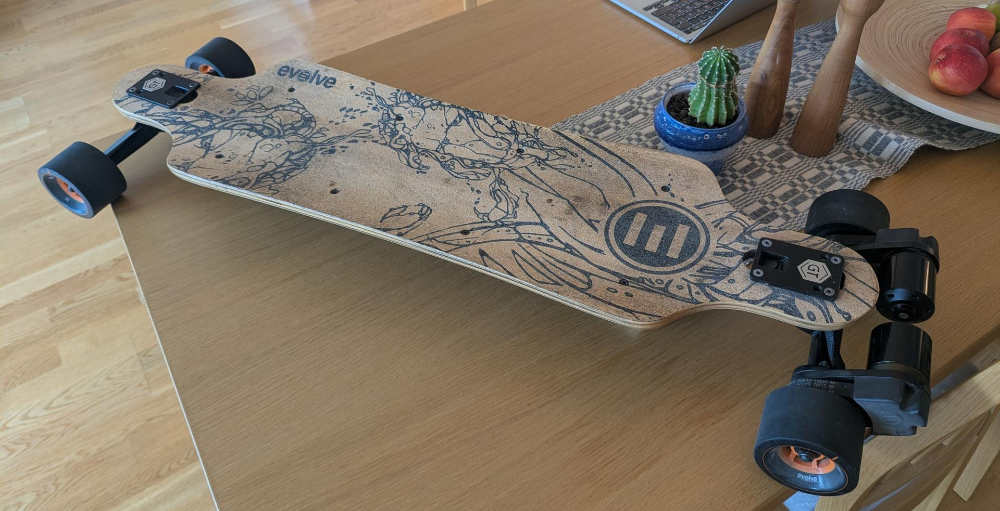

When we moved to Ålesund last year, we quickly made a great group of outdoorsy, active friends. Naturally, they had been into action sports for years, while longboarding was a brand-new territory for both me and my wife. She quickly got hooked on downhill longboarding, but that created a minor logistical problem: I spent way too much time playing "uphill taxi", driving our car back and forth just to give her a tow back up the hills.
I needed a fun project so I could join in on the cruising, keep up with our friends on their Onewheels, and tow my wife up those steep Ålesund inclines instead of using the car.
I took to the used market and stumbled across an Evolve Bamboo GT electric skateboard listed for around $150 (1,500 NOK). It was a pretty sketchy listing: the seller couldn't guarantee that a single component worked, and the board arrived literally in pieces inside a cardboard box. Floating loosely alongside the ESC and motors was the original Evolve battery pack — so swollen, bloated, and "spicy" that it was honestly a miracle the casing hadn't split wide open.
Since I had an old e-scooter battery pack sitting on my workbench waiting for a second life, I decided to take the gamble: I was going to rebuild this board from the ground up.

Before committing to repacking and insulating the donor cells into a new 10S3P configuration, I needed to know if the underlying electronics had survived. I laid out the BMS, ESC, and my temporary pack on the lab bench.
When hooking up the Evolve BMS, I immediately hit a classic multimeter puzzle:
Seeing ~31V on an unswitched output usually makes you wonder if a MOSFET has blown. However, this turned out to be standard FET leakage current (ghost voltage). Multimeters have a massive input impedance (~10 MΩ). A tiny leakage current (μA) through the unpowered semiconductors or balance resistors is enough to show a voltage reading on the meter. As soon as a real load is applied, that voltage collapses straight to 0V until the BMS gets its wake-up signal from the ESC/charger.
Once I wired up the main power, the switch, and the UART line, the board came alive. I grabbed the R1 remote, gave it a gentle pull, and both motors spun up smoothly. The $150 gamble was paying off!

Going from a compact "2x15 block" cell layout (how the donor scooter battery was packed) to a flat enclosure profile is where the mechanical challenge starts.
Evolve Bamboo decks have a lot of flex. If you run rigid nickel strips continuously down the length of the board, board flex will quickly fatigue the nickel, leading to micro-cracks, high resistance, or outright shorts.
To build a pack that survives the street:

Fitting a custom-built 10S3P assembly, the stock BMS, balance wiring, and main harness inside the original enclosure turned out to be tighter than I liked. Squishing balance wires against the deck lid is a recipe for insulation wear over time.
Instead of forcing it, I 3D printed this pre-made riser. Thank you to the open-source community for sharing the design files!
The riser sits flush between the deck and the stock plastic enclosure, adding just enough Z-height clearance to let the battery breathe, keep the balance wire harness completely uncompressed, and preserve the original clean lines of the board.

After buttoning everything up, sealing the enclosure perimeter, and taking it out for a spin, the board rides amazingly well. The throttle response is smooth, and the power this old e-scooter battery pack delivers is surprisingly high.
Best of all: no more driving the car down the hill to pick up my wife, and I can finally cruise along without breaking a sweat.
